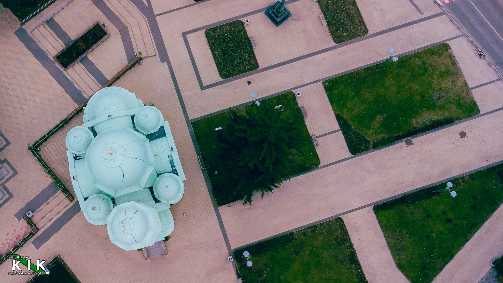
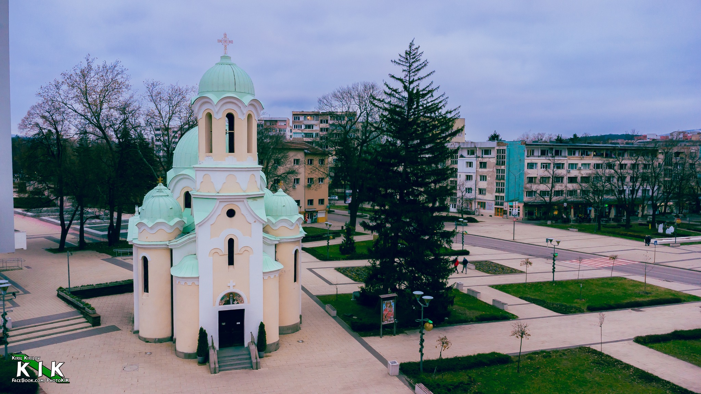
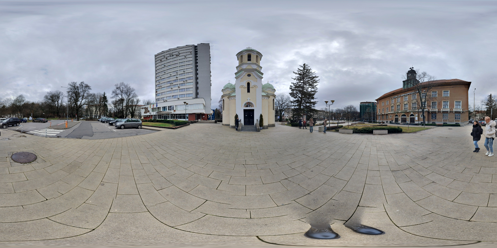

Църква "Св. Иван Рилски"
Символ на града



Църква "Св. Иван Рилски" в Перник е български православен храм, построен през 1910-1920 години. Сградата е известна като "Минната църква" и е осветена на 1 ноември 1920 година. Храмът е посветен на Свети Иван Рилски, покровител на миньорите, и е известен със своята атмосфера и духовна стойност. В момента храмът е популярен за провеждане на сватбени ритуали и е изографисан от българските художници Никола Маринов и Дечко Узунов през 1937/1939 години.
360° виртуална разходка
